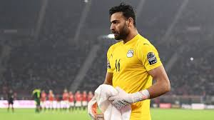
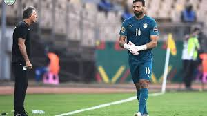
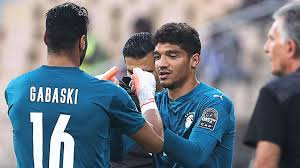

- جد الكثير من النماذج الناجحة و المشرفة في مصر في جميع المجالات في الفترة السابقة ولكن كان التطوير في المجال الرياضي ملحوظ بشكل كبير .
- في حوارنا مع نموذج من افضل النماذج الموجودة في ساحة كرة القدم كابتن محمد ابو جبل (جباسكي) حيث قام ببداية مسيرته من الصفر والتي واجه فيها الكثير من الصعوبات حتي وصل الي القلعة البيضاء والذي قام بتحقيق أكثر من 13 بطولة معها ثم وجودة ك حارس للمنتخب الوطني وفي السطور القادمة ستناول حياة هذا النموذج المشرف الذي أصبح الان كمثل اعلي للشباب
- ج)نشأت في مكان بسيط بقرية الواصلة في أسيوط مركز الفتح بدأت ك لعيب كرة في الشارع وان جميع اخوته لعيبة كرة قدم حيث بدأت بمساعدتهم بللعب بمركز الشباب الخاص بالقرية ثم انتقلت الي نادي شبان المسلمين بأسيوط بمساعدة اخي الأكبر لمدة عامين ونصف ثم انتقلت الي اسمنت أسيوط ومن اسمنت أسيوط الي نادي امبي ومن هنا بدأت مسيرتي الاحترافية
- ج)اتمرن مع الفريق بشكل طبيعي يوميا في حدود من ساعة ونصف لساعتين ثم اتمرن بمفردي خارج التمرين لتطوير مهاراتي لمدة ساعة واقوم بتطوير نفسي عن طريق الجيم واللياقة والفنيات
- ج)مسيرتي في الزمالك كانت مشرفة جدا حيث حصلت علي اكثر من 13 بطولة وبالتأكيد لحظة فوز السوبر الافريقي علي الترجي التونسي كانت لها طعم خاص خاصة انها كانت أن بعدها بأيام فزت علي الاهلي في السوبر المصري فكانت البطولتين في أسبوع واحد فكان شعور جميل جدا ومن افضل اللحظات في مسيرتي الكروية
- ج)بالتأكيد ك لعيب كرة قدم مررت بمواقف كثير صعبة لا استطيع وصفها وتعبت كثير للوصول للي انا فيه بفضل الله ودعوات والدي ووالدتي تخطيت مواقف كانت من الممكن ان تؤدي بي للأعتزال وبالتأكيد أن من أصعب اللحظات التي مررت بها لحظة خسارة مباراه القرن امام النادي الأهلي ولحظة خسارة نهائي أفريقيا مع منتخب مصر عام 2021 امام السنغال
- ج)بالتأكيد نادي الزمالك هو بيتي لقد قمت باللعب فيه لمدة ست سنوات ولو أتعرض عليا اللعب في مره اخري مرحب جدا بذلك لأنني جميع البطولات التي حصلت عليها كانت مع الزمالك ف بالتأكيد أرحب جدا بالعودة الي بيتي
- ج)الكره الان هي احتراف انا الان العب في البنك الأهلي ف بالنسبة لي أن العب في اندية القمة مثل الأهلي والزمالك ولكن ان وجدت مقارنة بين اللعب في النادي الأهلي أو نادي الزمالك بالتأكيد اختياري سيذهب للزمالك ،انا ك لعيب كرة قدم تعودت علي الانتقادات ليس من الخصم فقط ولكن من جمهور الفريق الذي العب فيه وهذا هو طبيعة كرة القدم وبدون هذة الانتقادات لن نستطيع التطوير والتقدم ولكن من المهم ان النقد يكون بناء
- ج)انا اقدس حياتي الخاصة وخاصة مع زوجتي حيث نقوم بعدة هوايات مثل الفتنس واليوجا والجيم حيث احاول ربط حياتي الخاصة بتطوير نفسي في كرة القدم
- ج) والله لم افكر في إجابة هذا السؤال من قبل ولكن ان لم أكن لعيب كرة لودت ان اكون لعيب كرة للقدرة علي مساعدة الناس ودخول الفرحة في قلوبهم ف انا من صغري حلمي ان اكون لعيب كرة قدم والحمدلله بتوفيق الله ودعوة والدتي قدرت تحقيق ذلك وان اكون وسط الكبار
- ج) جميع حراس مصر الحاليين جيديين ولا يوجد بيني وبينهم اي خلاف ولكن انا افصل حارس في مصر وحارس مصر الأول وان سألت هذا السؤال الف مره سأقول انني حارس مصر الأول
- ج)لقب جباسكي هو مرتبط ب البروف فييرا مدرب الزمالك عام 2014 حيث كان لا يستطيع نطق اسمي بحكم انه برتغالي فكان يواجه صعوبة في نطق الاسم فقام بتسمييتي هذا الاسم نسبة لأسم لاعب صديقة اسمه جباسكي ليستطيع نطق الاسم ومن وقتها جميع الناس تناديني بهذا اللقب وانا أحببته جدا